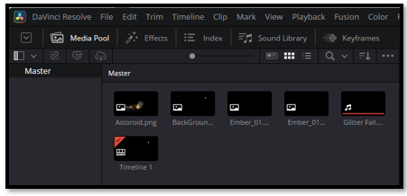
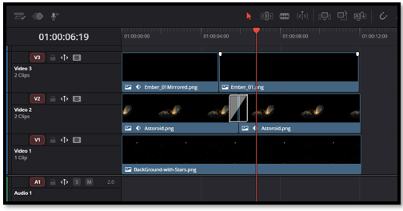

~What is DaVinci?~
6/1/2026

What Is DaVinci Resolve? A Beginner‑Friendly Introduction
DaVinci Resolve is a powerful movie‑making and video‑editing program used by everyone from hobbyists to Hollywood studios. But at its heart, it’s simply a creative workspace where you can bring in your images, arrange them on a timeline, and bring them to life with animation, effects, and sound.
If you can drag a picture onto a timeline, you can start creating.

When you open DaVinci Resolve, the first place you’ll work is the Media Pool. This is where you import all the pieces of your project:
- images
- video clips
- audio
- backgrounds
- effects
Once your files are in the Media Pool, you can drag them onto the timeline. Think of the timeline as a stage:
- The bottom track is usually your background
- Each track above holds a different element
- Anything that needs to move independently should be on its own track or its own clip
This layered approach is what allows you to animate objects separately — a star drifting across the screen, an asteroid spinning, a character walking, a glow effect shimmering, and so on.

How did it Start?
Did you know that DaVinci wasn’t always a Video Editing program like it is today. It actually began life as a dedicated color‑grading system used only in high‑end film studios.
Back in the 1980s and 90s, DaVinci Systems built hardware that cost tens of thousands of dollars and required trained colorists to operate. It was the secret weapon behind the look of many Hollywood films.
When Blackmagic Design bought the company in 2009, they did something revolutionary: they took this elite technology and made it available to everyone — even in the free version.
Why this matters: Resolve’s color tools aren’t “add‑ons.” They’re the heart of the program, which is why even the free version feels so cinematic.
How it has Evolved
New users often feel overwhelmed because Resolve isn’t just an editor — it’s a full post‑production studio. But here’s the fun twist: each page is its own specialized tool.
- Media — organize your footage
- Cut — fast editing for quick projects
- Edit — full timeline editing
- Fusion — visual effects and compositing
- Color — world‑class color correction
- Fairlight — professional audio mixing
- Deliver — exporting and rendering
Most programs make you jump between apps for these tasks. Resolve keeps everything under one roof, which is why professionals love it.
Beginner tip: You don’t need to learn all the pages at once. Most people start with Edit, then explore the others when they’re ready.
Free Verses Pro
The Free Version Isn’t “Lite” — It’s Legitimately Powerful
This surprises almost everyone: DaVinci Resolve’s free version includes about 85–90% of the full Studio version’s features.
You get:
- full color grading
- Fusion visual effects
- Fairlight audio
- multi‑cam editing
- tracking
- masking
- keyframing
- GPU acceleration
The Studio version adds things like advanced noise reduction, more Magic Mask options, and extra GPU support — but beginners can go very far without spending a penny.
DaVinci Resolve can look intimidating at first glance, but once you understand that it’s simply a place to arrange your images, build your layers, and bring your ideas to life, the whole program opens up. You don’t need to master every page or every tool to begin creating something meaningful. Start with the basics, explore at your own pace, and let your curiosity guide you. This series will walk with you step by step, offering small, practical tips that make each part of the journey feel clear and achievable. Whether you’re brand- new, or returning after a break, you’re already on the right path — and your creativity is about to take off.